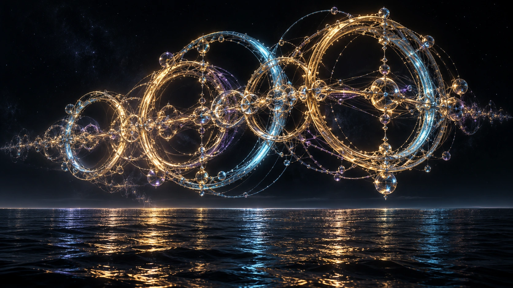

THE FIVE PLATONIC SOLIDS
Tetrahedron, cube, octahedron, dodecahedron and icosahedron. These are the five regular convex polyhedra—not a complete list of the shapes in nature.
ROBERT ASHWORTH · FOUNDER PORTFOLIO
A connected record of geometry, software, visual worlds and the evidence behind them.

01 / THE GEOMETRY REGISTRY
Preserving the original 18 families and adding eight. Catalogued, illustrated and tested are different stages. None is promoted as a universal winner.
The June 2026 championship receipt remains unchanged: 18 families, 0 performance-ready implementations. This expanded catalogue does not overwrite that historical result. Download registry JSON · Evaluation protocol ↗
02 / A REPRODUCIBLE FIRST COMPARISON
Explore ideal DC resistor networks with 64 nodes and equal total conductor material. Six layouts share identical terminals; honeycomb and sunflower use different positions and are shown separately.
| Network | Mean conductance ↑ | Mean path stretch ↓ | Breaks preserving all nodes connected |
|---|
In this model, adding connections has a cost: the same amount of material must be spread across more wire.
For each graph, cross-section A = V / total wire length and edge conductance g = A / (ρℓ). Diameter D, material volume V and resistivity ρ are normalized to 1. Mean effective conductance averages all 2,016 terminal pairs equally, in normalized units V/(ρD²). Higher conductance describes this declared resistor model only.
Download complete results and graph coordinates · Methods and reproduction ↗
THE NEXT ENGINEERING QUESTION
That requires a defined medium, frequency band, source, load and noise environment. The present DC model screens geometry trade-offs; it does not yet predict signal attenuation.
| Application | Freeze before testing | Measure against the baseline |
|---|---|---|
| Electrical / RF paths | Material, length or footprint, conductor volume, dielectric, frequency band and matched loads | Transmission / insertion loss (S21), reflection (S11), group delay, energy and temperature |
| Digital communication | Same channel, modulation, data rate, transmit power and noise conditions | Bit error rate, received signal-to-noise, latency, energy per delivered bit |
| Fluid / thermal channels | Same fluid, viscosity, footprint, material and inlet / outlet conditions | Flow rate, pressure drop, pumping power, temperature uniformity and fouling sensitivity |
Use untouched validation cases and retain failures. An independent rerun and representative physical measurement are required before an operational claim. Measurement reference ↗
03 / FROM A NAME TO AN EQUATION
Five regular convex solids. A cycloid for an ideal descent. A spiral placement rule. A branching relation with explicit physical assumptions.
THE FIVE PLATONIC SOLIDS
Tetrahedron, cube, octahedron, dodecahedron and icosahedron. These are the five regular convex polyhedra—not a complete list of the shapes in nature.
BRACHISTOCHRONE
Uniform gravity, frictionless point mass, released from rest. A fastest-descent curve is not a universal fastest signal path.
SUNFLOWER / PHYLLOTAXIS
rₙ = c√n · θₙ = nπ(3 − √5)A useful placement rule to test for packing, sampling and array design. The arrangement alone establishes no communications advantage.
TREE-INSPIRED TRANSPORT
r₀³ = r₁³ + r₂³Murray’s classical relation balances ideal laminar-flow pumping and maintenance costs. Real materials, pulsation and asymmetric networks can change the optimum.
“Tree of Life” is a symbolic motif, not a single equation that unlocks a universal physical effect.
Your founder paper groups the work into Echo Field Dynamics; Echo Sequence Geometry; Echo Lattice Geometries; and Echo Waveforms & Gradient Structures. This is a conceptual taxonomy, distinct from the five Platonic solids and from the task-specific testing registry.
04 / ONE PORTFOLIO, A TRACEABLE RECORD
ProofLock supplies the shared evidence layer. The current commercial entry point is a buyer-owned baseline validation sprint: one authorized source, an agreed comparator, and a reviewable decision.
Read the canonical portfolio map ↗ Open the evidence index ↗
05 / THE VISUAL LANGUAGE
Nineteen distinct cinematic studies, mathematical forms you can explore, and a studio for making your own visual frames.
Ten visual worlds and the frame editor ↗
11—16Six cosmic studies and light / wave models ↗
17—19Hopf, trefoil, gyroid and superformula explorer ↗
AI-assisted cinematic imagery is artistic interpretation. Source image detail and export dimensions are disclosed in the collections. An enlarged 20K file does not contain 20K of native captured detail.
06 / READY FOR A SERIOUS REVIEW
A focused route through the portfolio for the 5 October meeting. The meeting date is founder-reported; this page does not announce an institutional event or endorsement.
Show the visual collection, then identify one reviewer-relevant engineering problem.
Explore a mathematical form and compare two networks under the same constraints.
Open the registry, frozen results, source, limitations and retained negative outcomes.
Name the owner, dataset, comparator, acceptance criteria and independent reproduction plan.
Correspondence is classified by what occurred. An inquiry, eligibility reply, collaboration agreement and exploratory call do not establish a customer, award or validation. Private messages and contact details remain in the founder’s review packet.
Engineering depth and organized evidence can improve reviewability. Commercial value still depends on independent reproduction, ownership documentation, buyer acceptance and contracted revenue.
The latest located valuation update is dated 25 September 2026. Its historical financing range remains an internal negotiation hypothesis; this review does not assert a new appraisal or numerical increase.
Inspect readiness and remaining gates ↗Source code shows an implementation. A run receipt supports the named run. Independent reproduction and a buyer’s acceptance are separate milestones.